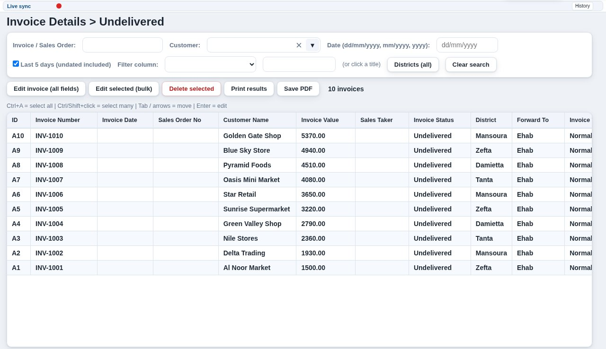
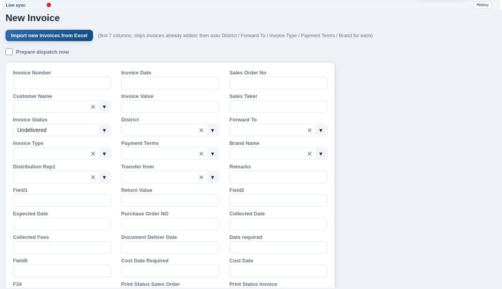

Run your whole distribution in one placeشغّل التوزيع كله من مكان واحد
Invoices, delivery follow-up, reports, cash and expenses. One Windows program, live sync between devices, English and Arabic.فواتير، متابعة التسليم، تقارير، كاش ومصروفات. برنامج واحد على ويندوز، مزامنة مباشرة بين الأجهزة، عربي وإنجليزي.
Download installer versionحمل نسخة التثبيت Download portable versionحمل نسخة بدون تثبيت
What's Newالجديد
v8.153.35
- Driver Deliveries now updates by itself while it is open: when a driver marks an invoice delivered on the phone, the numbers and the driver's list change within a few seconds, with no need to leave and re-enter.شاشة Driver Deliveries بقت بتتحدث لوحدها وهي مفتوحة: لما السواق يعلّم فاتورة تم تسليمها من الموبايل، الأرقام وقايمة السواق بتتغير في ثواني من غير ما تخرج وتدخل.
v8.143.34
- Fixed: in the cloud-connected version, saving a new invoice could freeze the program for good if it happened at the same moment as a cloud sync. Nothing else changed.تم الإصلاح: في النسخة المتصلة بالسحابة، حفظ فاتورة جديدة كان ممكن يعلّق البرنامج لو حصل في نفس لحظة مزامنة السحابة. ومفيش أي حاجة تانية اتغيرت.
v8.133.33
- Phone app company code: the Web API key, company name, code and QR are now saved and shown again every time the screen is opened.كود الشركة لتطبيق الموبايل: مفتاح Web API واسم الشركة والكود والـ QR بقوا بيتحفظوا وبيظهروا تاني كل ما تفتح الشاشة.
v8.123.32
- Firebase connection start-up now also tries the Windows trusted certificates (needed when an antivirus inspects secure connections) and other safe network settings, each tested in a separate short process. The first one that works is used. If none works, the program still opens without Firebase and boot.log records the reason.بدء اتصال Firebase بقى بيجرب كمان شهادات ويندوز الموثوقة (مطلوبة لما مضاد الفيروسات بيفحص الاتصالات الآمنة) وإعدادات شبكة آمنة تانية، كل واحدة في عملية منفصلة قصيرة. أول واحدة تنجح بتتستخدم. ولو مفيش واحدة نجحت البرنامج لسه بيفتح من غير Firebase وboot.log بيسجل السبب.
v8.113.31
- Fixed: the program could close at startup on some Windows PCs once a Firebase key file was added. The Firebase connection set-up is now tested first in a separate short process (with an alternative network setting if it crashes). If it still fails, the program opens without Firebase and writes the reason in boot.log.تم الإصلاح: البرنامج كان ممكن يقفل عند التشغيل على بعض أجهزة ويندوز بعد إضافة ملف مفتاح Firebase. دلوقتي بيتم تجربة إعداد اتصال Firebase الأول في عملية منفصلة قصيرة (ومعاها إعداد شبكة بديل لو انهارت). ولو لسه فشلت البرنامج بيفتح من غير Firebase ويكتب السبب في boot.log.
v8.103.30
- Fixed: the program could close at startup after a Firebase key file was added. The Firebase start-up is now checked first in a separate short process; if it fails, the program opens without Firebase and writes the reason in boot.log.تم الإصلاح: البرنامج كان ممكن يقفل عند التشغيل بعد إضافة ملف مفتاح Firebase. دلوقتي بيتم فحص تشغيل Firebase الأول في عملية منفصلة قصيرة، ولو فشل البرنامج بيفتح من غير Firebase ويكتب السبب في boot.log.
v8.093.29
- Fixed: after a Firebase key file was added, the program could stay stuck at startup and never open. The Firebase libraries now load in the background (waiting at most 25 seconds), so the program always opens, and they are prepared for the next start.تم الإصلاح: بعد إضافة ملف مفتاح Firebase كان البرنامج ممكن يفضل عالق عند التشغيل ومايفتحش. دلوقتي مكتبات Firebase بتتحمل في الخلفية (بحد أقصى 25 ثانية) فالبرنامج بيفتح دايما، وبتتجهز للتشغيل الجاي.
v8.083.28
- Added a startup trace (boot.log) in the program data folder to find why the program may not open after a Firebase key file is added. If Restart now cannot reopen the program, it now stays open and tells you to reopen it from its icon.تمت إضافة سجل بدء التشغيل (boot.log) في فولدر بيانات البرنامج لمعرفة سبب عدم فتح البرنامج بعد إضافة مفتاح Firebase. ولو زر Restart now مقدرش يفتح البرنامج تاني، البرنامج بيفضل مفتوح ويقولك تفتحه من الأيقونة.
v8.073.27
- Fixed: the second start of the program (from the icon, after closing it) could show a black window that closed at once. The second start now keeps its window open. The program also writes launcher.log in its data folder so any start problem can be traced.تم الإصلاح: التشغيل التاني للبرنامج (من الأيقونة بعد ما تقفله) كان ممكن يطلع شاشة سودا وتقفل على طول. دلوقتي التشغيل التاني بيسيب النافذة مفتوحة. وكمان البرنامج بيكتب ملف launcher.log في فولدر بياناته علشان أي مشكلة في التشغيل تتتبع.
v8.063.26
- Safety: this public program now always uses its own separate data folder, even if it is started without its launcher.أمان: البرنامج العام ده بقى دايما بيستخدم فولدر بيانات منفصل بتاعه، حتى لو اتشغل من غير الـ launcher.
- Fixed: starting the program again after it was closed or stopped could show a black window that closes at once. Leftover window processes are cleaned up and, if the native window still fails, the program opens in an Edge or Chrome app window.تم الإصلاح: تشغيل البرنامج تاني بعد ما اتقفل كان ممكن يطلع شاشة سودا وتقفل على طول. دلوقتي بيتم تنضيف عمليات النافذة المتبقية، ولو النافذة الأصلية فشلت البرنامج بيفتح في نافذة Edge أو Chrome.
v8.053.25
- Fixed: Restart now (after uploading the Firebase key file or an update) could close the program on Windows without opening it again. It now reopens reliably and writes restart.log if anything goes wrong.تم الإصلاح: زر Restart now (بعد رفع ملف مفتاح Firebase أو بعد تحديث) كان ممكن يقفل البرنامج على ويندوز ومايفتحش تاني. دلوقتي بيفتح من جديد بشكل ثابت وبيكتب restart.log لو حصل أي مشكلة.
v8.043.24
- The phone app company code now also shows as a QR code. In the phone app (1.4.0) tap Scan QR code and point the camera at the screen. Copy and paste still work.كود الشركة للتطبيق بقى بيظهر كمان كـ QR. في تطبيق الموبايل (1.4.0) دوس Scan QR code ووجّه الكاميرا على الشاشة. النسخ واللصق لسه شغالين.
v8.033.23
- The program opens as Guest with limited rights. Use Switch user and sign in as Admi1 (password D123456789D) to set it up.البرنامج بيفتح كـ Guest بصلاحيات محدودة. اضغط تبديل المستخدم وادخل بـ Admi1 (كلمة السر D123456789D) علشان تجهزه.
- Customer setup inside Settings: add your own administrator, upload your Firebase key file, get the phone app company code. With a Full license and your Firebase project, invoices and users sync to your own cloud between your PCs. Delete Admi1 once your own admin works.تجهيز العميل من الإعدادات: ضيف الأدمن بتاعك، ارفع ملف مفتاح Firebase، واطلع كود الشركة لتطبيق الموبايل. مع ترخيص Full ومشروع Firebase بتاعك، الفواتير والمستخدمين بيتزامنوا على السحابة بتاعتك بين أجهزتك. امسح Admi1 لما الأدمن بتاعك يشتغل.
v8.023.22
- With a Full license you can connect your own Firebase project using the Firebase buttons and the wizard. Put your key file next to the program, enter the license and restart once. Invoices stay on this PC for now.مع ترخيص Full تقدر توصّل مشروع Firebase بتاعك بأزرار Firebase والمعالج. حط ملف المفتاح جنب البرنامج، دخّل الترخيص وأعد التشغيل مرة. الفواتير لسه على الجهاز ده.
v8.013.21
- Licenses made by the Distribution License phone app are accepted too. Older keys keep working.المفاتيح اللي بتتعمل من تطبيق Distribution License على الموبايل بقت بتشتغل كمان. والمفاتيح القديمة لسه شغالة.
v8.003.20
- New Enter license button. Send the device code to the developer and paste the key you receive. A license works only on the PC it was made for.زرار جديد Enter license. ابعت كود الجهاز للمطور وحط المفتاح اللي هيوصلك. الترخيص بيشتغل على الجهاز اللي اتعمل له بس.
- A banner shows how many of the 50 trial operations are left. After the trial the program is read and print only; nothing is deleted.شريط بيوريك فاضل كام عملية من الـ 50. بعد التجربة البرنامج قراءة وطباعة بس ومفيش حاجة بتتمسح.
- Security: the program answers only requests from the PC it runs on.أمان: البرنامج بيرد على الطلبات اللي جاية من الجهاز اللي شغال عليه بس.
v7.993.19
- Full version: Driver Deliveries screen to confirm what drivers marked delivered, users with a driver or distribution manager role, and a one-click Firebase setup wizard. These are not available in the trial.النسخة الكاملة: شاشة تسليمات السواقين لتأكيد اللي السواقين علموه تم تسليمه، ومستخدمين بدور سواق أو مدير توزيع، ومعالج إعداد Firebase بضغطة واحدة. مش متاحة في النسخة التجريبية.
v7.983.18
- Driver tracking: the full version lets you track your drivers, what each one delivered and when (who delivered it and the time are saved on every invoice). Not available in the trial.تتبع السواقين: النسخة الكاملة بتخليك تتابع السواقين، كل واحد سلم إيه وإمتى (اسم اللي سلم ووقت التسليم بيتسجلوا على كل فاتورة). مش متاح في النسخة التجريبية.
- Trial: the shared folder box is empty and shows it is not available in the trial.النسخة التجريبية: خانة مجلد الشير فاضية ومكتوب إنها مش متاحة في التجريبي.
- Invoice Details and Invoice Report now open as a full page and Back returns to Home.Invoice Details و Invoice Report بيفتحوا صفحة كاملة و Back بيرجعك لـ Home.
v7.983.18
- Customize buttons: every button has Move to and an arrow. Put any button inside any other button, at any level, or hide it, and bring it back any time.Customize buttons: كل زرار جمبه Move to وسهم. تدخل أي زرار جوة أي زرار تاني في أي مستوى، أو تخفيه، وترجعه وقت ما تحب.
- Button size: five sizes for all buttons. New Blank only filter shows rows where a column is empty.حجم الأزرار: خمس أحجام لكل الأزرار. وفلتر جديد Blank only بيعرض الصفوف اللي العمود بتاعها فاضي.
- Conflict Expenses now works like Conflict Invoices, with Keep Became, Keep Was and Reject.Conflict Expenses بقت زي Conflict Invoices، مع Keep Became وKeep Was وReject.
v7.943.14
- Notifications move to Earlier as soon as you point at them, and the counter drops at once. New: Mark all as read.الإشعار بينتقل لـ Earlier أول ما تقف عليه بالماوس والعداد بينقص فورا. جديد: Mark all as read.
- Conflict review: choose which version to keep.مراجعة الكونفليكت: اختار النسخة اللي تفضل.
v7.923.12
- Notifications no longer miss an Edit when an invoice is added and edited within seconds, or changed while the program was closed.الإشعارات بقت متفوتش التعديل لو الفاتورة اتضافت واتعدلت في ثواني، أو اتغيرت والبرنامج مقفول.
v7.913.11
- Update and Restore questions now open in the program's own dialog instead of a browser-style box.أسئلة التحديث والاسترجاع بقت بتظهر في نافذة البرنامج نفسه بدل صندوق المتصفح.
v7.903.10
- New: a What's New box after login, shown once per version.جديد: نافذة "الجديد" بعد تسجيل الدخول، بتظهر مرة واحدة لكل نسخة.
- Edit notice shows what a field was and what it became.إشعار التعديل بيوضح كانت إيه وبقت إيه.
- Update closes the old program and opens the new one by itself.التحديث بيقفل البرنامج القديم ويفتح الجديد لوحده.
- The program opens only once; if it is open, it comes to the front.البرنامج بيفتح مرة واحدة، ولو مفتوح بيظهر قدامك.
- Live sync moved to the top, next to the user name. History button removed.Live sync بقى فوق جنب اسم المستخدم، وزرار History اتشال.
v7.893.9
- Update notice: a green bar appears when a new version is available, with an Open Update button.إشعار التحديث: شريط أخضر بيظهر لما تتوفر نسخة جديدة، وفيه زرار Open Update.
v7.883.8
- New: the program can open in its own full-screen window instead of the browser (experimental). If it cannot, it opens as before.جديد: البرنامج ممكن يفتح في نافذة خاصة به ملء الشاشة بدل المتصفح (تجريبي). ولو مقدرش بيفتح زي الأول.
v7.873.7
- Districts popup: Apply now ticks the chosen districts in the list, so Edit selected is ready. The tick boxes are also more reliable.نافذة Districts: زرار Apply دلوقتي بيعلّم المناطق اللي اخترتها في القايمة، فـ Edit selected يبقى جاهز. وخانات التحديد بقت أثبت.
v7.863.6
- Settings: the long Table columns list is now one button that opens a popup. Tick the columns you want, then Save.الإعدادات: قايمة أعمدة الجدول الطويلة بقت زرار واحد بيفتح نافذة. اختار الأعمدة وبعدين Save.
- Districts popup: new Select all button.نافذة Districts: زرار Select all جديد.
- The program window always opens full screen.نافذة البرنامج بتفتح دايماً ملء الشاشة.
v7.853.5
- District & Customer Review: one Clear search button instead of two.مراجعة المنطقة والعميل: زرار Clear search واحد بدل اتنين.
- New Districts filter: pick several districts at once and see only those.فلتر Districts جديد: اختار كذا منطقة مع بعض وشوف دول بس.
v7.843.4
- The installer now closes the running program before updating its files.المثبّت دلوقتي بيقفل البرنامج الشغال قبل ما يحدّث ملفاته.
- Trial edition: printing, choosing a shared folder and restoring a backup now work (the 50-operation limit still applies).النسخة التجريبية: الطباعة واختيار الفولدر المشترك واسترجاع النسخة الاحتياطية بقوا شغالين (حد الـ 50 عملية زي ما هو).
v7.833.3
- The program window in the Windows taskbar now shows the same D icon as the program.نافذة البرنامج في شريط المهام بقت بنفس أيقونة D بتاعة البرنامج.
- Clearer message when the update key file is missing, with the folder where to put it.رسالة أوضح لما ملف مفتاح التحديث مش موجود، مع مكان وضعه.
v7.813.1
- New version numbering, shown in the program footer and the file names.ترقيم إصدارات جديد، ظاهر في أسفل البرنامج وفي أسماء الملفات.
- Two ways to install: a classic Next, Next installer (no administrator rights) or a portable version with no installation.طريقتين للتشغيل: مثبّت عادي Next, Next من غير صلاحيات أدمن، أو نسخة بدون تثبيت.
- The free trial opens straight into the program, with no login. It is limited to 50 operations (each add or delete counts, editing is free) and runs only on your PC.النسخة التجريبية المجانية بتفتح على طول من غير تسجيل دخول، محدودة بـ 50 عملية (الإضافة والحذف يتحسبوا والتعديل مجاني) وبتشتغل على جهازك بس.
- New program icon.أيقونة جديدة للبرنامج.
What it doesالبرنامج بيعمل إيه
Import from Excelاستيراد من Excel
Add new invoices from your ERP export in one step. Duplicates are skipped.ضيف فواتير جديدة من ملف Excel مرة واحدة. المكرر بيتخطى.
Delivery follow-upمتابعة التسليم
Undelivered invoices by district, overdue and delivery dates.الفواتير اللي لسه متسلمتش حسب المنطقة والتأخير ومواعيد التسليم.
Printable reportsتقارير للطباعة
Proposal and In Process reports grouped by district, ready to print or save as PDF.تقارير Proposal و In Process مجمعة بالمنطقة، جاهزة للطباعة أو PDF.
Live syncمزامنة مباشرة
Several devices work on the same data and stay in step (full version).أكتر من جهاز على نفس البيانات (النسخة الكاملة).
Driver trackingتتبع السواقين
Track what each driver delivered and when (full version).تابع كل سواق سلم إيه وإمتى (النسخة الكاملة).
Cash and expensesالكاش والمصروفات
Collect cash invoices, record expenses and returned cash.تحصيل فواتير الكاش وتسجيل المصروفات والمرتجع.
Paper print checkمراجعة الورق
Warehouse sales order and invoice paper checks with history.مراجعة ورق أوامر البيع والفواتير بالمستودع مع السجل.
English and Arabicعربي وإنجليزي
Switch language and font size any time from Settings.غيّر اللغة وحجم الخط في أي وقت من الإعدادات.
One-button updatesتحديث بزرار واحد
Check for updates and install them with a safe backup and one-click restore (full version).فحص التحديثات وتثبيتها مع نسخة احتياطية وزر رجوع (النسخة الكاملة).
Real screens from the programشاشات حقيقية من البرنامج


Start in three stepsابدأ في ٣ خطوات
Pick the installer or the portable button above.اختار نسخة التثبيت أو بدون تثبيت من الزرار فوق.
Installer: Next, Next. Portable: right-click the zip, Extract All.التثبيت: Next, Next. بدون تثبيت: كليك يمين على الملف ثم Extract All.
Open Distribution Program Trial. It opens straight in.افتح Distribution Program Trial. بيفتح على طول.
Distribution Program v8.153.35
Download installer versionحمل نسخة التثبيت Download portable versionحمل نسخة بدون تثبيتDownload Android app (APK)حمل تطبيق أندرويد (APK)
Version 1.4.3 · 3.2 MB · open this page on the phone, tap the button, then open the file and allow "Install unknown apps" for your browser when Android asks. No Google sign-in needed. The app starts empty: scan the QR from the program (Settings > Phone app company code) or paste the company code to connect it to your own company.النسخة 1.4.3 · حجمه 3.2 ميجابايت · افتح الصفحة دي من الموبايل، دوس الزرار، وافتح الملف، ولما أندرويد يسأل اسمح بـ "تثبيت تطبيقات غير معروفة" للمتصفح. مش محتاج حساب جوجل. التطبيق بيفتح فاضي: امسح الـ QR من البرنامج (Settings > Phone app company code) أو الصق كود الشركة عشان يتوصل بشركتك.
SHA-256: 0f103f61120aa7a8bac92102a59a3183feedfb47b43b6d8099ecfd90d58a0749